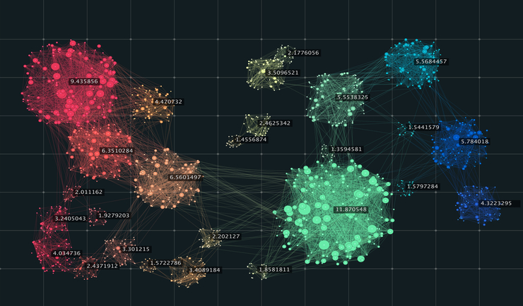

Welcome! I'm currently pursuing my second master’s degree in Computer Science at the Courant Institute of New York University, with concentration in ML and Computer Vision. Broadly, my research interests lie in deep learning, self-supervised learning, and other machine learning application to tackle real-world problems.
Recently my work focuses on (1) self-supervised learning, (2) multimodal model, and (3) distributed ML system.
In my free time, I enjoy playing soccer as a striker. I am a National second-level athlete in China and has won multiple municipal soccer championship titles. I also enjoy skiing, espresso-making, and most importantly, spending time with my two adorable but sometimes stubborn Japanese Akitas - Kohana and Mochi.
Most Recent Update
Due to current economic conditions, my offer at Amazon will not be extended and I am now actively looking for full-time position in ML/AL in US and Canada after graduation (expected May 2023).
Publications

Sequential Clustering and Dimension Reduction Algorithm of Time Series Data
A paper that presents a robust clustering and dimension reduction algorithm for high-dimension time-series data, published on CEO & CIO In Information Times (ISSN1007-9440), 2020
Relative Severity Analysis and Time-series Prediction of COVID-19 Outbreak
A paper that presents a statistical methology to measure the severity of COVID-19 across different regions for prediction purpose, published on Health World (ISSN1005-4596), 2020
Projects
Object Detection with Semi-Supervised and Self-Supervised Learning
Semi/Self-supervised learning approaches for object detection with limited labeled data.
Semantic Role Labeling with Deep Embedding Methods
Transformer-based approaches to detect and classify Partitive nouns.
Self-Supervised Image-to-Image Translation
Conditional-GAN and Cycle-GAN enhanced by self-supervised training for high-resolution image colorization and style transfer.
Cooperative Multi-Agents with Reinforcement Learning
Multi-agent deep reinforcement learning models in Unity’s gaming environment.
Estimating Depth from RGB Monocular images
CNN for monocular depth estimation for high-resolution RGB-D images.
Waste Detection Using Different Deep Learning Methods
Image classification and object-detection models for waste recognition problem in natural scene.
Stock Trading Signal Prediction by Twitter Sentiment
A final project that builds a model, and its corresponding Django web interface, that analyzes Twitter sentiment, and uses it to predict buy/sell signals for stocks.
Work Experience
-
Work
Applied Scientist
Amazon
Seattle, WA
Jun, 2022 -- Aug 2022
The internship with Alexa Smart Home Machine Learning team focused on building machine learning models to proactively send device grouping setup recommendations (Alexa Hunches) to Alexa users.
-
• Developed classification models with supervised / self-supervised learning methods (Siamese, SimSiam) based on similarity between devices’ deep embeddings (PyTorch, AWS, Spark)
• Designed features generated from time series usage data and text data to represent device’s usage pattern
• Researched and adapted computer vision and word embedding models to generate devices’ deep embeddings
-
Work
Senior Quantitative Investment Manager
Qianhai Alliance Asset Management
Shenzhen, China
Dec, 2017 -- May 2021
-
• Developed machine learning based investment strategies for 8 equity mutual funds (AUM 450 million USD)
• Researched, designed, and backtested machine learning models to predict the performances of equities
• Co-developed and facilitated the transition to the first Python investment analysis framework for the company
{kind=link}
{kind=link}
{kind=link}